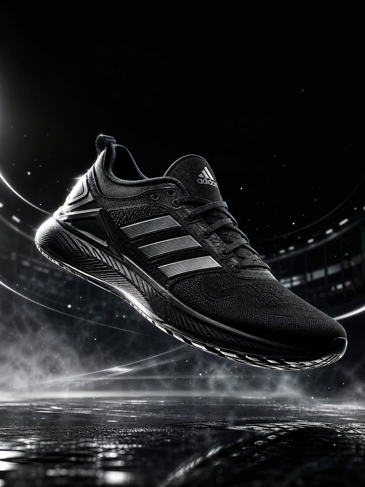

Futuristic sneaker hero ad
PRP-019Prop stylingGPT Image 2by Brie AI (@briepretty_728)2026-09-27

Premium sports ad: black performance sneaker as floating hero with dramatic rim light.
Prompt
Create a premium cinematic Adidas sports advertising image featuring a futuristic black Adidas performance sneaker as the hero product, suspended slightly above a dark reflective surface in a dramatic studio environment. The sneaker should look powerful, aerodynamic, and meticulously engineered, with realistic mesh, engineered knit, rubber outsole, subtle stitching, fine material textures, and the iconic Adidas three-stripe design clearly visible. Keep the product design authentic and commercially polished. Use dramatic directional lighting from above and behind, creating sharp rim highlights along the silhouette while revealing the intricate texture of the shoe. Add subtle atmospheric mist, tiny floating particles, and controlled motion-inspired light trails around the sneaker to suggest speed and energy without distracting from the product. The background transitions from deep charcoal to black with a subtle architectural texture inspired by a modern urban sports arena. The composition should feel minimal, bold, premium, and technologically advanced. Place the Adidas logo naturally and tastefully within the composition, with clean brand visibility and generous negative space. No unnecessary text. Camera: low-angle three-quarter product photography, 85mm lens, shallow depth of field, ultra-detailed macro-level textures, crisp focus on the sneaker, realistic reflections, cinematic contrast, professional commercial photography. Visual style: premium global sports campaign, futuristic athletic aesthetic, luxury product photography, dramatic editorial lighting, photorealistic materials, high dynamic range, sophisticated composition. Color palette: black, graphite, subtle metallic silver, with restrained white highlights. Aspect ratio: 3:4 vertical. Ultra-photorealistic, 4K detail, realistic materials, physically accurate lighting, premium advertising quality, clean composition, no distortion, no extra shoes, no malformed logos, no duplicate objects, no watermark.
Tags: sneaker, hero product, rim light